# ============================
# Data Manipulation / Databases
# ============================
library(tidyverse) # Collection of packages for data manipulation (dplyr, tidyr) and visualization (ggplot2)
library(dplyr) # Data manipulation: filtering, summarizing, joining
library(plyr) # Older data manipulation package (mostly superseded by dplyr)
library(dbplyr) # Interface to translate dplyr syntax to SQL for databases
# ============================
# Descriptive Statistics & Visualization
# ============================
library(ggplot2) # Flexible and powerful plotting system
library(ggpubr) # Easy-to-use publication-ready plots with ggplot2 enhancements
library(lattice) # Alternative plotting system for multi-panel plots
library(descr) # Descriptive statistics: frequency tables, crosstabs
library(Rmisc) # Utility functions for summaries: mean, SE, CI
library(knitr) # Dynamic report generation, integration with R Markdown
library(kableExtra) # Enhanced tables for knitr and R Markdown
# ============================
# Classical Statistics / Inference
# ============================
library(MASS) # Classical statistics functions, distributions, datasets, LDA, etc.
library(car) # Companion to Applied Regression: diagnostic tests, ANOVA, VIF
# ============================
# Regression & Machine Learning
# ============================
library(caret) # Unified framework for regression, classification, and model training/tuning
library(leaps) # Subset selection in regression: best subset, forward/backward selectionSeniors Example
Libraries
Import Data
dataseniors<-read.csv2("seniors2.csv", sep=";", dec=",")#read data
data.df<-data.frame(dataseniors[1:310,1:31])#data frame(rectangular data structures)Description:
Value: Degree to which people strive for an optimal value-for-money relation.
Price: Degree to which consumers focus on finding and paying low prices.
Coup: Tendency to respond to a sale, because the discount off the original price influence.
Primav: Tendency to be a source of information for many products, services and places where lower prices may be found.
Priqua: Tendency to consider prices as an indicator of quality.
Prest: Degree to which higher prices are perceived to be a status symbol.
Brand: Degree to which the consumer focuses on brands. # Conv: Degree to which consumers feel that ease or convenience are important.
Impuls: Degree to which consumers are impulse-driven.
Risk: Degree to which consumers have a risk preference.
Innov: Degree to which consumers would like to be innovative or are open to innovation.
Univariate Descriptive Analysis
Describe the socieconomic characteristics of the sample: barcharts
bxp <- ggplot(data.df, aes(x = gender)) + # x = gender -> Variable to plot
geom_bar(aes(y = after_stat(count) / sum(after_stat(count))), # after_stat(count) = absolute freq
fill = "orange") + # after_stat(count) / sum(after_stat(count)) = relative freq
labs(y = "f_i")
dp <- ggplot(data.df, aes(x = mrhp)) + # x = mrhp -> Variable to plot
geom_bar(aes(y = after_stat(count) / sum(after_stat(count))), # after_stat(count) = absolute freq
fill = "lightblue") + # after_stat(count) / sum(after_stat(count)) = relative freq
labs(y = "f_i")
dp1 <- ggplot(data.df, aes(x = place)) +
geom_bar(aes(y = after_stat(count) / sum(after_stat(count))),
fill = "red") +
labs(y = "f_i")
dp2 <- ggplot(data.df, aes(x = numfamily)) +
geom_bar(aes(y = after_stat(count) / sum(after_stat(count))),
fill = "green") +
labs(y = "f_i")
ggarrange(bxp, dp,dp1,dp2,
ncol = 2, nrow = 2)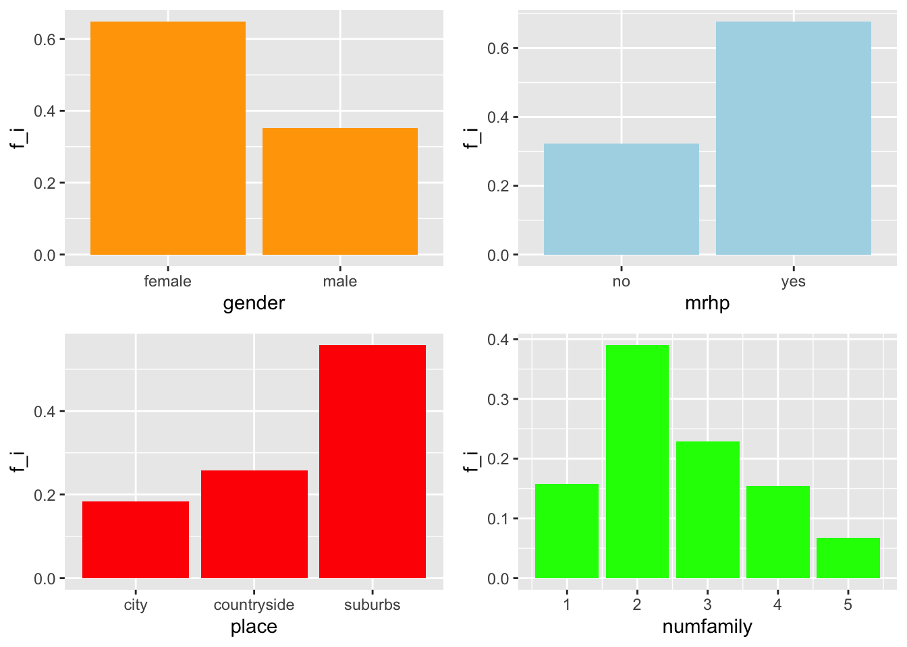
ggplot(data.df, aes(x=numfamily)) +
geom_bar(fill="red")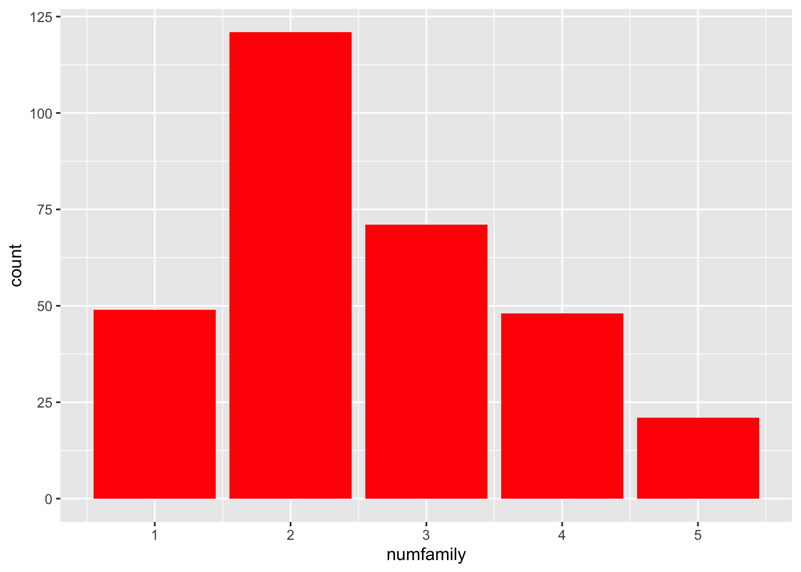
bxp<-ggplot(data.df, aes(x=age)) +
geom_bar(fill="Orange")
dp<-ggplot(data.df, aes(x=education)) +
geom_bar(fill="lightblue")
dp1<-ggplot(data.df, aes(x=income)) +
geom_bar(fill="Red")
ggarrange(bxp, dp,dp1,
ncol = 1, nrow = 3)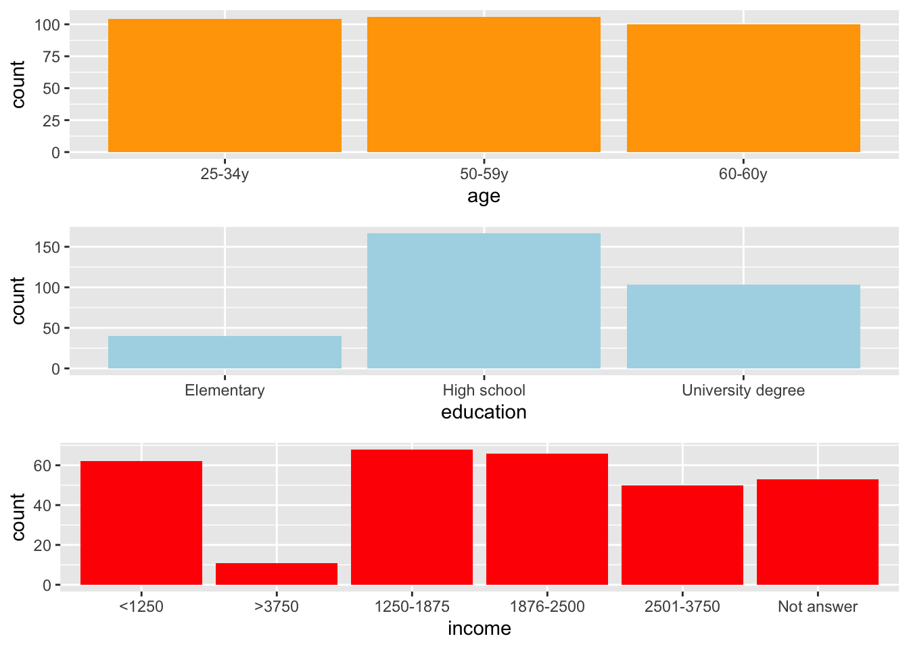
Numerical measures for buying behavior
data_df_summary <-data.df %>%
summarise_at(vars(conv:value), # conv:value selects all columns from conv to value
list(avg=mean, med=median)) # You can add other measures
data_df_summary conv_avg brand_avg coup_avg impuls_avg innov_avg prest_avg price_avg
1 3.869935 3.45 3.676839 3.022548 3.682581 2.737323 3.907323
primav_avg priqua_avg risk_avg sale_avg value_avg conv_med brand_med coup_med
1 2.629806 3.669355 3.194194 3.579935 4.549516 3.67 3.5 3.71
impuls_med innov_med prest_med price_med primav_med priqua_med risk_med
1 3 3.6 2.63 3.88 2.5 3.75 3.2
sale_med value_med
1 3.67 4.67#Plot means for buying behavior
data.fr<-data.frame(data.df[1:310,2:13])
S<-colMeans(data.fr,dims=1)
x<-c("conv","brand","coup","impuls","innov","prest","price","primav","priqua","risk","sale","value")
DD<-data.frame(S,x)
ggplot(DD,mapping=aes(x=x,y=S,group=1))+geom_line()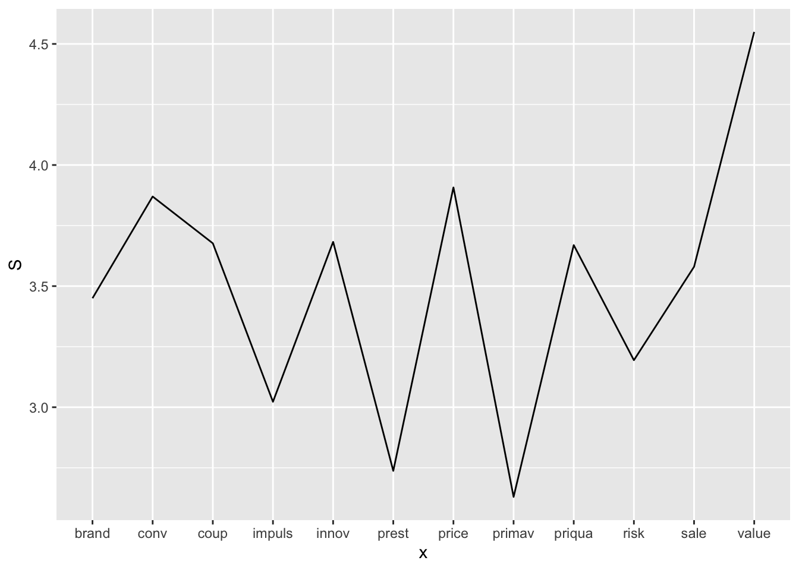
Histograms for value
ggplot(data.fr, aes(x = value)) +
geom_histogram(bins=10, fill="lightblue",
color="black")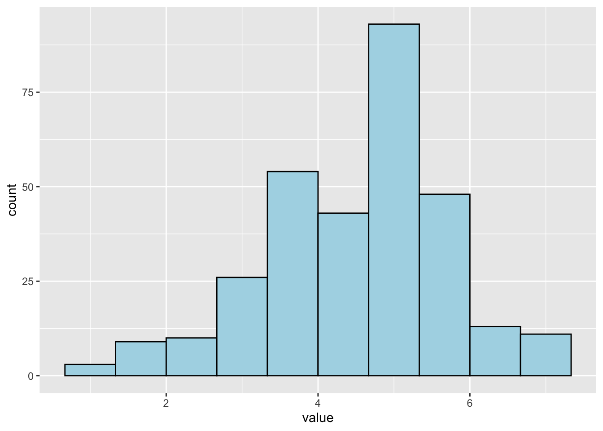
ggplot(data.fr, aes(x = value)) +
geom_histogram(aes(y = after_stat(count) / sum(after_stat(count))),
bins=15, fill="steelblue", color="white") +
labs(y = "relative freq")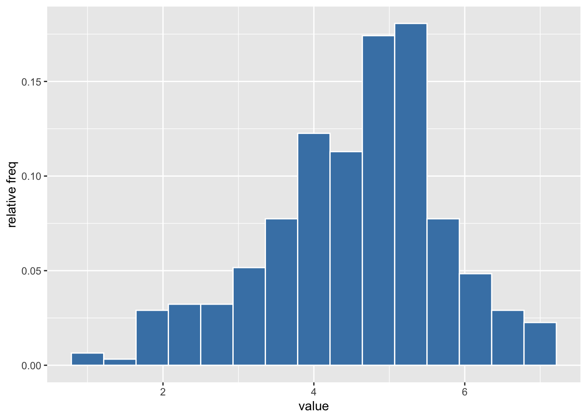
Density for Value
ggplot(data.fr, aes(x = value)) +
geom_density(fill="skyblue", alpha=0.5)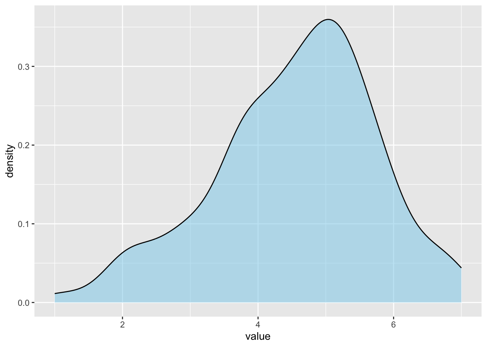
Frequency table for Value (Discretization of continuous variable)
datavalue<-case_when((data.df$value<=2) ~ "1",
(data.df$value>2) &(data.df$value<=3) ~ "2",
(data.df$value>3) &(data.df$value<=4) ~ "3",
(data.df$value>4) &(data.df$value<=5) ~ "4",
(data.df$value>5) &(data.df$value<=6) ~ "5",
(data.df$value>6) &(data.df$value<=7) ~ "6",
(data.df$value==7) ~ "7")
datfreq<-freq(ordered(datavalue),plot=T)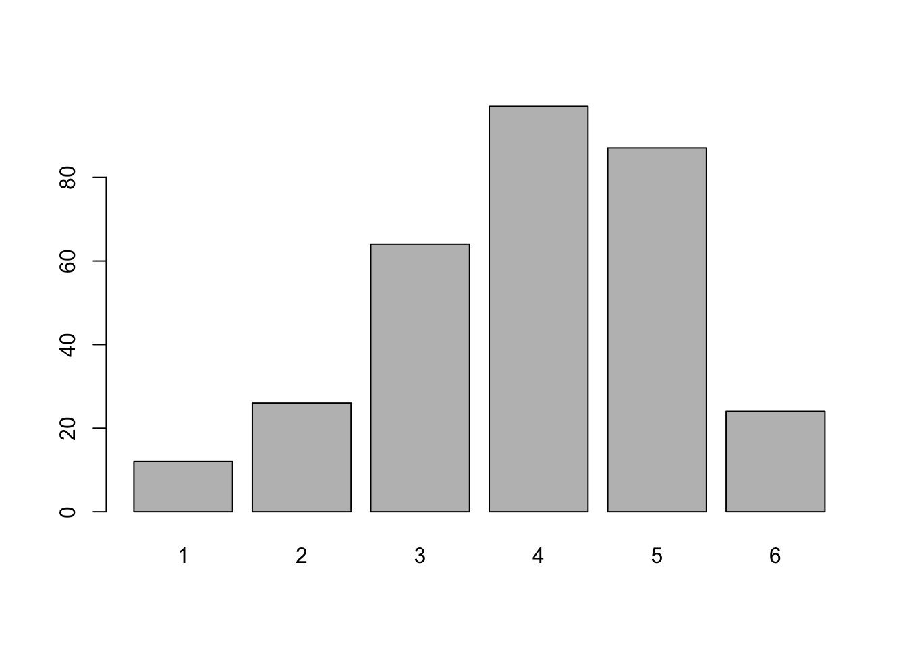
datfreqordered(datavalue)
Frequency Percent Cum Percent
1 12 3.871 3.871
2 26 8.387 12.258
3 64 20.645 32.903
4 97 31.290 64.194
5 87 28.065 92.258
6 24 7.742 100.000
Total 310 100.000 Frequency Table for Price (Discretization of continuous variable)
dataprice<-case_when((data.df$price<=2) ~ "1",
(data.df$price>2) &(data.df$price<=3) ~ "2",
(data.df$price>3) &(data.df$price<=4) ~ "3",
(data.df$price>4) &(data.df$price<=5) ~ "4",
(data.df$price>5) &(data.df$price<=6) ~ "5",
(data.df$price>6) &(data.df$price<=7) ~ "6",
(data.df$price==7) ~ "7")
datfreq<-freq(ordered(dataprice),plot=F)
datfreqordered(dataprice)
Frequency Percent Cum Percent
1 7 2.258 2.258
2 48 15.484 17.742
3 123 39.677 57.419
4 98 31.613 89.032
5 28 9.032 98.065
6 6 1.935 100.000
Total 310 100.000 Frequency Table for Convenience (Discretization of continuous variable)
dataconv<-case_when((data.df$conv<=2) ~ "1",
(data.df$conv>2) &(data.df$conv<=3) ~ "2",
(data.df$conv>3) &(data.df$conv<=4) ~ "3",
(data.df$conv>4) &(data.df$conv<=5) ~ "4",
(data.df$conv>5) &(data.df$conv<=6) ~ "5",
(data.df$conv>6) &(data.df$conv<=7) ~ "6",
(data.df$conv==7) ~ "7")
datfreq<-freq(ordered(dataconv),plot=F)
datfreqordered(dataconv)
Frequency Percent Cum Percent
1 16 5.161 5.161
2 58 18.710 23.871
3 128 41.290 65.161
4 74 23.871 89.032
5 28 9.032 98.065
6 6 1.935 100.000
Total 310 100.000 Boxplots for value, Price and Convenience
bxp<-ggplot(data.df,mapping=aes(y=value))+geom_boxplot(fill="Orange")
dp<-ggplot(data.df,mapping=aes(y=price))+geom_boxplot(fill="lightblue")
dp1<-ggplot(data.df,mapping=aes(y=conv))+geom_boxplot(fill="Red")
ggarrange(bxp, dp,dp1,
ncol = 3, nrow = 1)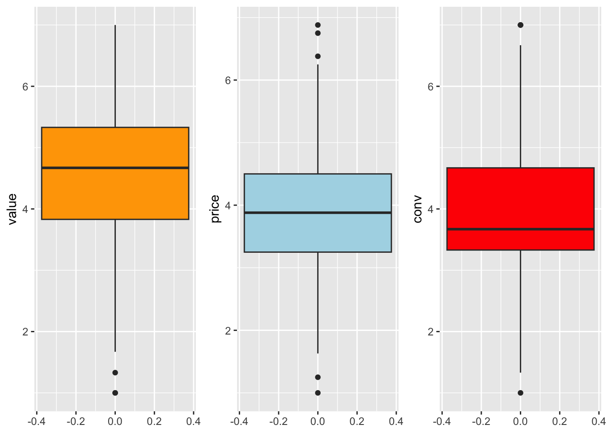
Bivariate Descriptive Analysis
Generate contingency tables
ConTtable<-table(datavalue,data.df$gender) #Joint absolute frequencies
ConTtable
datavalue female male
1 10 2
2 17 9
3 38 26
4 68 29
5 53 34
6 15 9RConTtable<-prop.table(ConTtable)*100 #Joint relative frequencies
RConTtable
datavalue female male
1 3.2258065 0.6451613
2 5.4838710 2.9032258
3 12.2580645 8.3870968
4 21.9354839 9.3548387
5 17.0967742 10.9677419
6 4.8387097 2.9032258colSums(RConTtable) #Marginal frequencies for gender female male
64.83871 35.16129 rowSums(RConTtable) #Marginal frequencies for Value 1 2 3 4 5 6
3.870968 8.387097 20.645161 31.290323 28.064516 7.741935 CConTtableG<-prop.table(ConTtable,margin=2)*100 #Conditional of Value for fixed gender
CConTtableG
datavalue female male
1 4.975124 1.834862
2 8.457711 8.256881
3 18.905473 23.853211
4 33.830846 26.605505
5 26.368159 31.192661
6 7.462687 8.256881CConTtableM<-prop.table(ConTtable,margin=1)*100 #Conditional of gender for fixed Value
CConTtableM
datavalue female male
1 83.33333 16.66667
2 65.38462 34.61538
3 59.37500 40.62500
4 70.10309 29.89691
5 60.91954 39.08046
6 62.50000 37.50000Box Plot for Conditional Distribution of Value, Price and Convenience (Fixed Gender)
bxp<-ggplot(data.df,mapping=aes(y=value,x=gender))+geom_boxplot(fill="Orange")
dp<-ggplot(data.df,mapping=aes(y=price,x=gender))+geom_boxplot(fill="lightblue")
dp1<-ggplot(data.df,mapping=aes(y=conv,x=gender))+geom_boxplot(fill="Red")
ggarrange(bxp, dp,dp1,
ncol = 3, nrow = 1)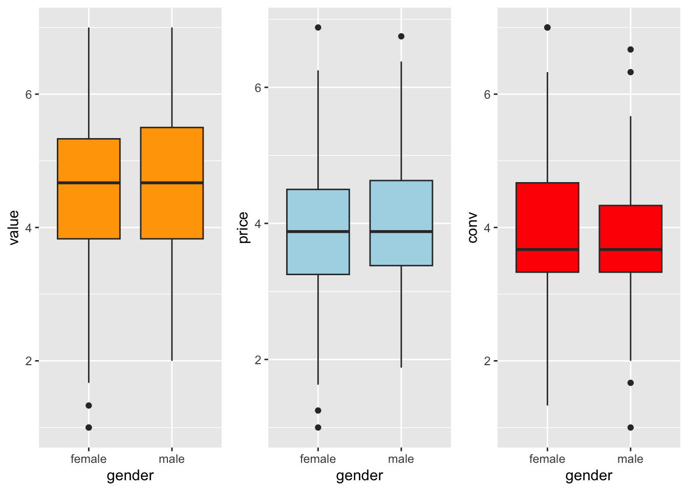
Box Plot for Conditional Distribution of Value, Price and Convenience (Fixed Age)
bxp<-ggplot(data.df,mapping=aes(y=value,x=education))+geom_boxplot(fill="Orange")
dp<-ggplot(data.df,mapping=aes(y=price,x=education))+geom_boxplot(fill="lightblue")
dp1<-ggplot(data.df,mapping=aes(y=conv,x=education))+geom_boxplot(fill="Red")
ggarrange(bxp, dp,dp1,
ncol = 3, nrow = 1)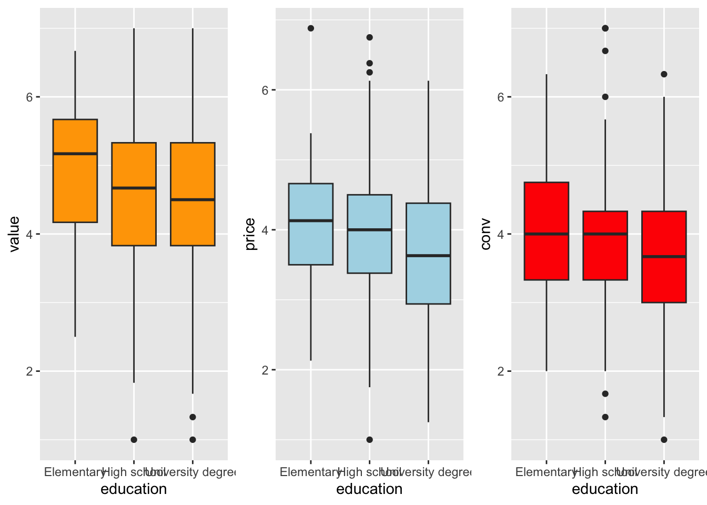
Conditional mean and sd for value and price, fixed gender
data_df_grouped <- group_by(data.df,gender)
sample_size <- data_df_grouped %>%
dplyr::summarise(n=n()) %>%
deframe()
sample_sizefemale male
201 109 data_df_summary <-data_df_grouped %>%
summarise_at(vars(value, price),
list(avg=mean,stde=sd))
data_df_summary# A tibble: 2 × 5
gender value_avg price_avg value_stde price_stde
<chr> <dbl> <dbl> <dbl> <dbl>
1 female 4.49 3.84 1.20 0.940
2 male 4.66 4.03 1.16 0.978Violin Plot
ggplot(data.df, aes(x = gender, y = innov, fill=gender)) +
geom_violin(alpha=0.7)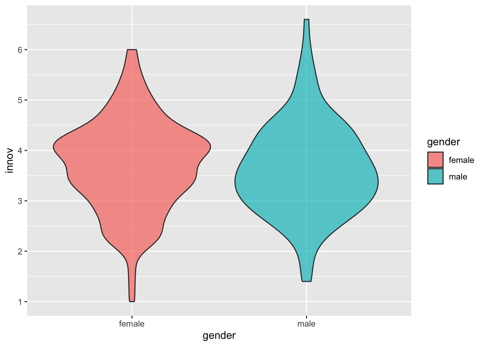
Density comparison across groups
ggplot(data.df, aes(x = innov, fill = gender)) +
geom_density(alpha=0.4) +
labs(title="Density comparison by group")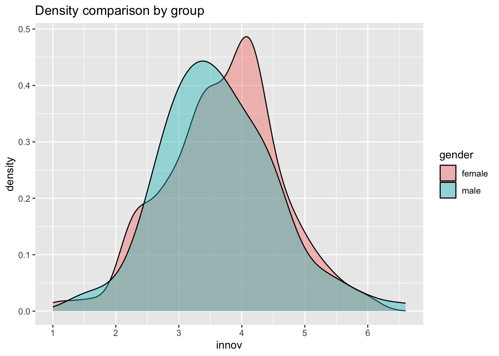
Confidence Intervals
Confidence interval for the population mean (unknown variance)
CI_m <- function (x, ci = 0.95)
{
standard_deviation <- sd(x)
sample_size <- length(x)
Margin_Error <- abs(qt((1-ci)/2,df=sample_size-1))* standard_deviation/sqrt(sample_size)
df_out <-
data.frame(
sample_size=length(x),
Mean=mean(x), sd=sd(x),
Margin_Error=Margin_Error,
'CI lower limit'=(mean(x) - Margin_Error),
'CI Upper limit'=(mean(x) + Margin_Error)) |>
tidyr::pivot_longer(
names_to = "Measurements",
values_to ="values", 1:6
)
return(df_out)
}
# Example. Compute 95% confidence interval for the mean of 'Value' in the population
CI_m(data.df$value, ci=0.95)# A tibble: 6 × 2
Measurements values
<chr> <dbl>
1 sample_size 310
2 Mean 4.55
3 sd 1.19
4 Margin_Error 0.133
5 CI.lower.limit 4.42
6 CI.Upper.limit 4.68 Creating a Sample from an Existing Population
set.seed(1)
sample1 <-
rnorm(n=50, mean=5.44, sd=2)
sample2 <-
rnorm(n=75, mean=5.44, sd=2)
sample3 <-
rnorm(n=60, mean=5.44, sd=2)
sample4 <-
rnorm(n=100, mean=5.44, sd=2)
sample5 <-
rnorm(n=150, mean=5.44, sd=2)
CI_m(sample1, ci=0.50)# A tibble: 6 × 2
Measurements values
<chr> <dbl>
1 sample_size 50
2 Mean 5.64
3 sd 1.66
4 Margin_Error 0.160
5 CI.lower.limit 5.48
6 CI.Upper.limit 5.80 CI_m(sample2, ci=0.50)# A tibble: 6 × 2
Measurements values
<chr> <dbl>
1 sample_size 75
2 Mean 5.67
3 sd 1.81
4 Margin_Error 0.142
5 CI.lower.limit 5.52
6 CI.Upper.limit 5.81 CI_m(sample3, ci=0.50)# A tibble: 6 × 2
Measurements values
<chr> <dbl>
1 sample_size 60
2 Mean 5.30
3 sd 2.09
4 Margin_Error 0.183
5 CI.lower.limit 5.12
6 CI.Upper.limit 5.49 CI_m(sample4, ci=0.50)# A tibble: 6 × 2
Measurements values
<chr> <dbl>
1 sample_size 100
2 Mean 5.40
3 sd 2.07
4 Margin_Error 0.140
5 CI.lower.limit 5.26
6 CI.Upper.limit 5.54 CI_m(sample5, ci=0.50)# A tibble: 6 × 2
Measurements values
<chr> <dbl>
1 sample_size 150
2 Mean 5.52
3 sd 1.98
4 Margin_Error 0.109
5 CI.lower.limit 5.41
6 CI.Upper.limit 5.63 Confidence interval for the population proportion in a Bernoulli distribution
CI_p <- function(x, ci = 95)
{
vcat<-na.omit(x)
p <- mean(x)
standard_deviation <- sqrt(p*(1-p))
sample_size <- length(x)
Margin_Error <- abs(qnorm((1-ci)/2))* standard_deviation/sqrt(sample_size)
df_out <-
data.frame(
sample_size=length(x),
p,
Margin_Error=Margin_Error,
'CI lower limit'=(p - Margin_Error),
'CI Upper limit'=(p + Margin_Error)) |>
tidyr::pivot_longer(
names_to = "Measurements",
values_to ="values", 1:5
)
return(df_out)
}Example. Compute 95% confidence interval for the population proportion of consumers that give 5 or more to ‘Value’
prop <- ifelse(data.df$value > 5, 1, 0) #Generate the Bernoulli sample with 1(meet the condition) and 0
prop.table(table(prop))prop
0 1
0.6419355 0.3580645 CI_p(prop ,ci=0.95)# A tibble: 5 × 2
Measurements values
<chr> <dbl>
1 sample_size 310
2 p 0.358
3 Margin_Error 0.0534
4 CI.lower.limit 0.305
5 CI.Upper.limit 0.411 Plot 95% confidence intervals for ‘Value’ divided by gender.
Function “summarySE” in the library Rmisc allow us to summarise one variable divided in groups.
df <- summarySE(data.df, measurevar="value", groupvars="gender", na.rm=T)
graf.point1 <- ggplot(df, aes(x=gender, y=value)) +
geom_point(size = 3) + ylim(3, 5)
graf.point1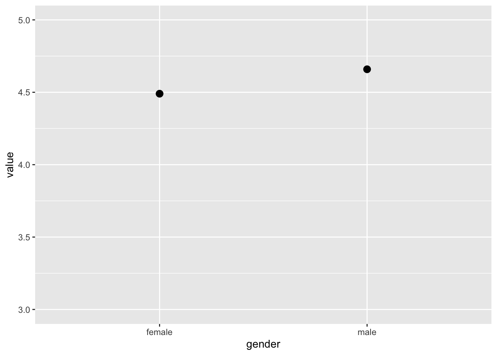
graf.point <- graf.point1 + geom_errorbar(aes(ymin=value-ci, ymax=value+ci), width = 0.2) + ylab("Importance") +
ggtitle("95% Confidence interval for the mean importance of Value by gender")
graf.point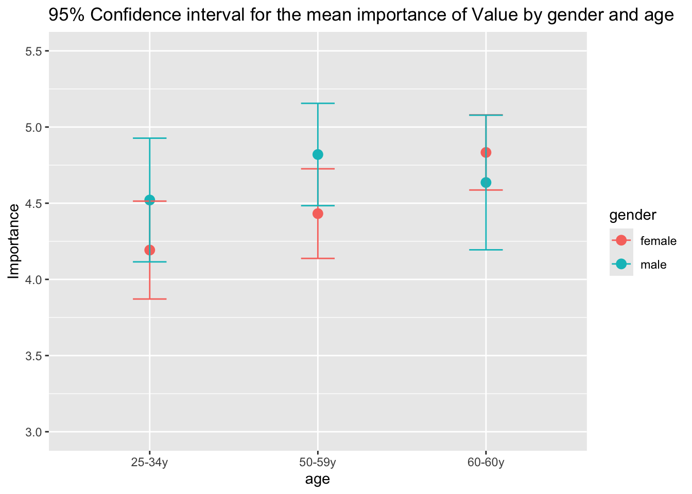
Plot 95% confidence intervals for ‘Value’ divided by gender and age.
df <- summarySE(data.df, measurevar="value", groupvars=c("gender","age"), na.rm=T)
graf.point1 <- ggplot(df, aes(x=age, y=value, colour=gender)) +
geom_point(size = 3) + ylim(3, 5.5)
graf.point1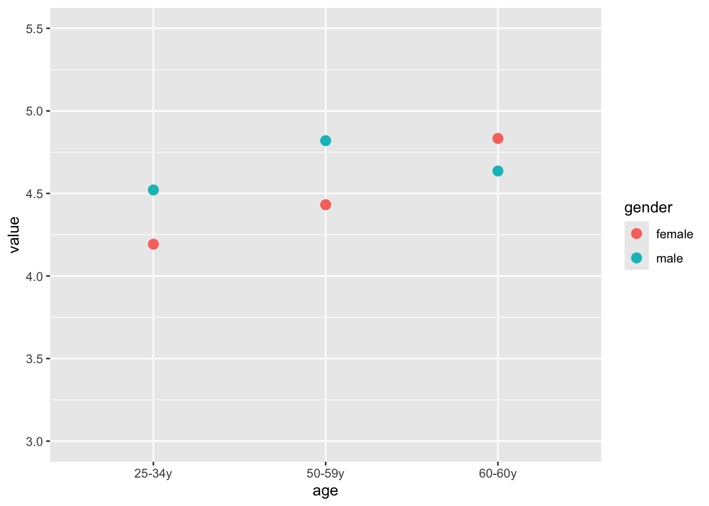
graf.point <- graf.point1 + geom_errorbar(aes(ymin=value-ci, ymax=value+ci), width = 0.2) + ylab("Importance") +
ggtitle("95% Confidence interval for the mean importance of Value by gender and age")
graf.point
Plot 95% confidence intervals for ‘Coup’ divided by gender and age.
df <- summarySE(data.df, measurevar="coup", groupvars=c("gender","age"), na.rm=T)
graf.point1 <- ggplot(df, aes(x=age, y=coup, colour=gender)) +
geom_point(size = 2) + ylim(1, 5.5)
graf.point1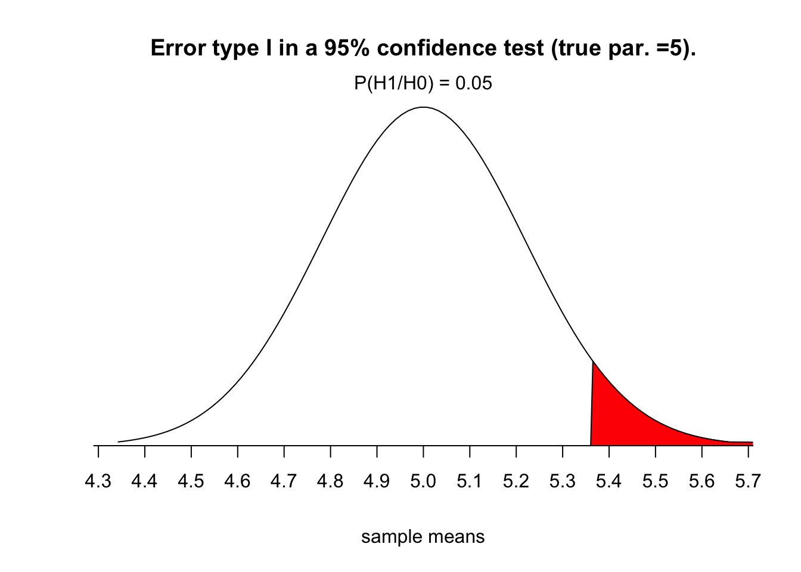
graf.point <- graf.point1 + geom_errorbar(aes(ymin=coup-ci, ymax=coup+ci), width = 0.2) + ylab("Importance") +
ggtitle("95% Confidence interval for the mean importance of Coupons by gender and age")
graf.point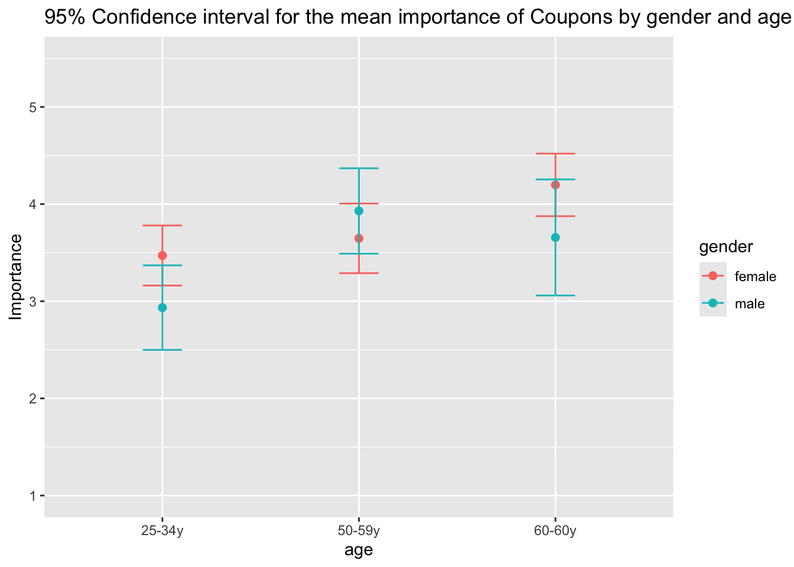
Hypothesis Testing
One-Sided Hypothesis Testing
The hypothesis is price = 4 and alternative price is greater than 4.
#H0: mu_{price}=4; H1: mu_{price}<4 (slide 13/33 to 15/33)
t.test(data.df$price, y=NULL,alternative="less",mu=4)
One Sample t-test
data: data.df$price
t = -1.7066, df = 309, p-value = 0.04445
alternative hypothesis: true mean is less than 4
95 percent confidence interval:
-Inf 3.996914
sample estimates:
mean of x
3.907323 qt(0.05,309) [1] -1.6498#H0: mu_{price}=4; H1: mu_{price}>4
t.test(data.df$price, y=NULL,alternative="greater",mu=4)
One Sample t-test
data: data.df$price
t = -1.7066, df = 309, p-value = 0.9556
alternative hypothesis: true mean is greater than 4
95 percent confidence interval:
3.817731 Inf
sample estimates:
mean of x
3.907323 qt(0.95,309) [1] 1.6498Two-Sided Hypothesis Testing
#H0: mu_{price}=4; H1: mu_{price}/=4
t.test(data.df$price, y=NULL,alternative="two.sided",mu=4)
One Sample t-test
data: data.df$price
t = -1.7066, df = 309, p-value = 0.0889
alternative hypothesis: true mean is not equal to 4
95 percent confidence interval:
3.800469 4.014176
sample estimates:
mean of x
3.907323 qt(0.975,309)[1] 1.967671qt(0.025,309)[1] -1.967671Proportional Hypothesis Testing
#H0: p{price>4}=0.35; H1: p_{price>4}>0.35 (slide 16/33)
prop <- ifelse(data.df$price>4, 1, 0) #Generate the Bernoulli sample with 1(meet the condition) and 0
t.test(prop, y=NULL,alternative="greater",mu=0.35)
One Sample t-test
data: prop
t = 2.6949, df = 309, p-value = 0.003713
alternative hypothesis: true mean is greater than 0.35
95 percent confidence interval:
0.379399 Inf
sample estimates:
mean of x
0.4258065 qnorm(0.95)[1] 1.644854Paired T-Test
#Paired test for equal mean importance for price and value (slide 18/33 to 19/33)
#----------------------------------------------------------
t.test(data.df$price, y=data.df$value,paired=TRUE,alternative="greater")
Paired t-test
data: data.df$price and data.df$value
t = -10.954, df = 309, p-value = 1
alternative hypothesis: true mean difference is greater than 0
95 percent confidence interval:
-0.7389188 Inf
sample estimates:
mean difference
-0.6421935 qt(0.95,309)[1] 1.6498# opposite
t.test(data.df$value, y=data.df$price,paired=TRUE,alternative="greater")
Paired t-test
data: data.df$value and data.df$price
t = 10.954, df = 309, p-value < 2.2e-16
alternative hypothesis: true mean difference is greater than 0
95 percent confidence interval:
0.5454683 Inf
sample estimates:
mean difference
0.6421935 Proportional Paired T-Test (Slide 25)
#Paired test for differences among the proportion of consumers giving importance >4 to price and value bigger than 0.2 (slide 20/33)
#---------------------------------------------------------------------------
propP <- ifelse(data.df$price>4, 1, 0)
propV <- ifelse(data.df$value>4, 1, 0)
t.test(propV, y=propP,paired=TRUE,alternative="greater",mu=0.2)
Paired t-test
data: propV and propP
t = 1.4165, df = 309, p-value = 0.07882
alternative hypothesis: true mean difference is greater than 0.2
95 percent confidence interval:
0.1925621 Inf
sample estimates:
mean difference
0.2451613 qnorm(0.95)[1] 1.644854Independent T-Test
#Independent t-test for equal means of price for male and females (slides 22-23)
#--------------------------------------------------------------------------------
s<-split(data.df$price,data.df$gender)#splits the variable price in two groups by gender
#first step: test for equal variances
var.test(s$male, s$female, alternative = "two.sided")
F test to compare two variances
data: s$male and s$female
F = 1.0826, num df = 108, denom df = 200, p-value = 0.6256
alternative hypothesis: true ratio of variances is not equal to 1
95 percent confidence interval:
0.7829478 1.5222037
sample estimates:
ratio of variances
1.08262 qf(0.975,108,200)[1] 1.382748#second step: test for differences of means
t.test(s$male, y=s$female,alternative="two.sided",mu=0,var.equal=TRUE)
Two Sample t-test
data: s$male and s$female
t = 1.6067, df = 308, p-value = 0.1091
alternative hypothesis: true difference in means is not equal to 0
95 percent confidence interval:
-0.04095048 0.40549199
sample estimates:
mean of x mean of y
4.025505 3.843234 qt(0.975,308)[1] 1.967696qt(0.025,308)[1] -1.967696Proportional Independent T-Test
#Independent t-test for equal proportions of price>5 for male and females (slides 24-25)
#---------------------------------------------------------------------------------------
propP <- ifelse(data.df$price>5, 1, 0)
s<-split(propP,data.df$gender)#splits the variable price in two groups by gender
#first step: test for equal variances
var.test(s$male, s$female, alternative = "two.sided")
F test to compare two variances
data: s$male and s$female
F = 1.8897, num df = 108, denom df = 200, p-value = 0.0001087
alternative hypothesis: true ratio of variances is not equal to 1
95 percent confidence interval:
1.366643 2.657020
sample estimates:
ratio of variances
1.889722 qf(0.975,108,200)[1] 1.382748#second step: test for differences of means
t.test(s$male, y=s$female,alternative="two.sided",mu=0,var.equal=FALSE)
Welch Two Sample t-test
data: s$male and s$female
t = 2.1103, df = 171.26, p-value = 0.03628
alternative hypothesis: true difference in means is not equal to 0
95 percent confidence interval:
0.005528217 0.165543033
sample estimates:
mean of x mean of y
0.16513761 0.07960199 qt(0.975,308)[1] 1.967696ANOVA Analysis
ANOVA (Analysis of Variance) is a statistical test used to compare the means of three or more independent groups to determine if there is a significant difference among them.
It is used when you have three or more groups to compare, unlike a t-test which is for two groups.
It helps test the effect of one or more independent variables (factors) on a quantitative dependent variable.
A “two-way” or “factorial” ANOVA can examine the effects of two independent variables at once and their potential interaction.
One-way analysis
#boxplot of price by income
ggboxplot(data.df, x = "income", y = "value",
color = "income", palette = c("#00AFBB", "#E7B800", "#FC4E07","orange", "green"),
order = c("<1250", "1250-1875", "1876-2500","2501-3750",">3750","I prefer not to answer"),
ylab = "Price", xlab = "Income")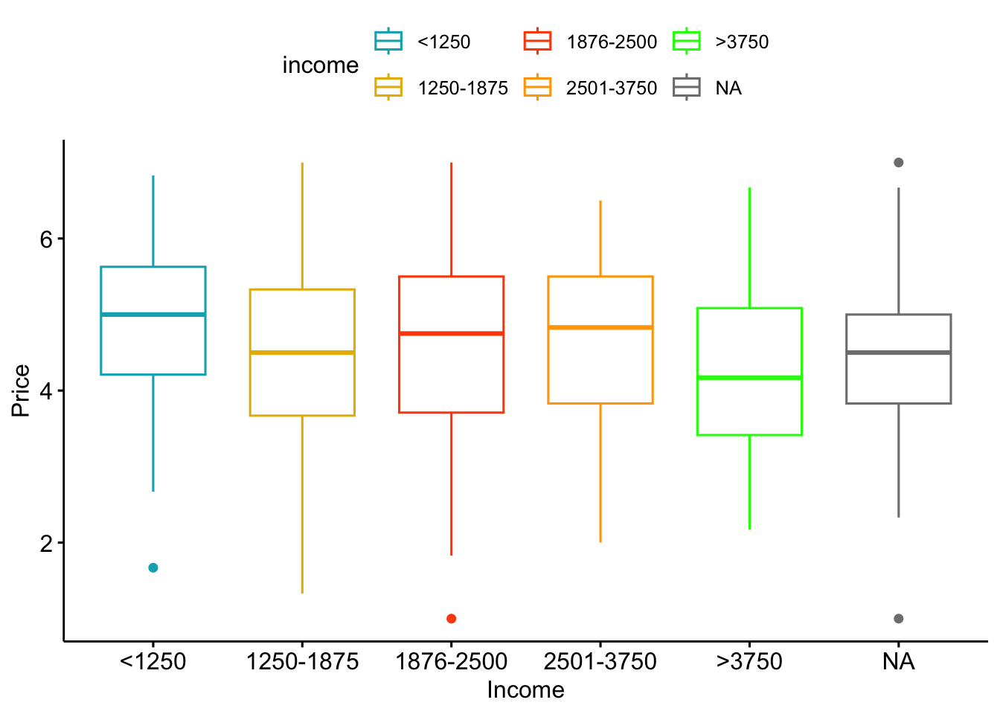
# Compute the analysis of variance
res.aov <- aov(value ~ income, data = data.df)
# Summary of the analysis
summary(res.aov) Df Sum Sq Mean Sq F value Pr(>F)
income 5 8.5 1.695 1.198 0.31
Residuals 304 430.1 1.415 One-way analysis (again)
#boxplot of price by income
ggboxplot(data.df, x = "education", y = "price",
color = "education", palette = c("#00AFBB", "#E7B800", "#FC4E07"),
order = c("Elementary", "High school", "University degree"),
ylab = "Price", xlab = "education")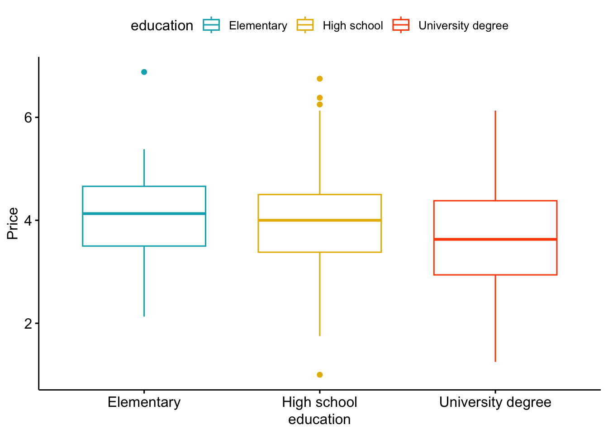
# Compute the analysis of variance
res.aov <- aov(value ~ income, data = data.df)
# Summary of the analysis
summary(res.aov) Df Sum Sq Mean Sq F value Pr(>F)
income 5 8.5 1.695 1.198 0.31
Residuals 304 430.1 1.415 Two-way analysis
#Boxplots 'Coup' divided by gender and age.
ggboxplot(data.df, x = "age", y = "coup", color = "gender",
palette = c("#00AFBB", "#E7B800","orange"))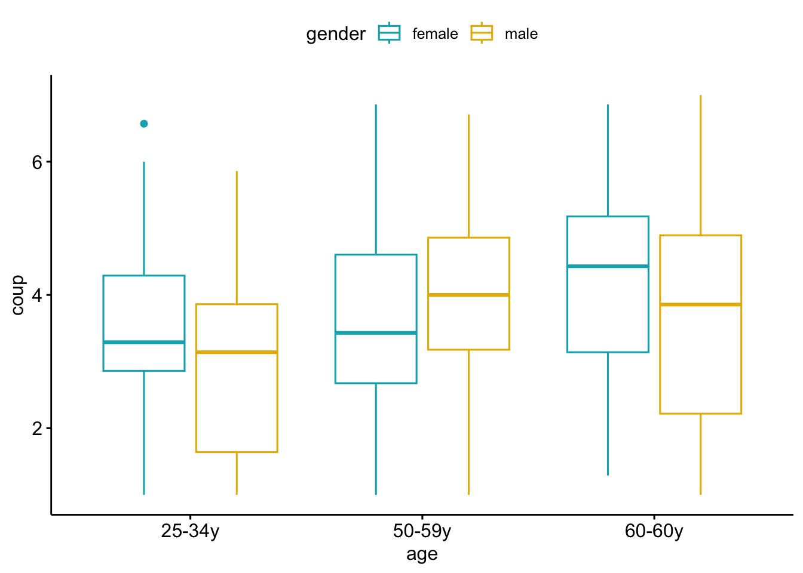
res.aov <- aov(value ~ age+gender, data = data.df)
summary(res.aov) Df Sum Sq Mean Sq F value Pr(>F)
age 2 10.6 5.300 3.812 0.0232 *
gender 1 2.5 2.461 1.770 0.1844
Residuals 306 425.5 1.390
---
Signif. codes: 0 '***' 0.001 '**' 0.01 '*' 0.05 '.' 0.1 ' ' 1data_df_grouped <- group_by(data.df,gender,age)
data_df_summary <-data_df_grouped %>%
summarise_at(vars(coup),
list(avg=mean,stde=sd))
data_df_summary# A tibble: 6 × 4
# Groups: gender [2]
gender age avg stde
<chr> <chr> <dbl> <dbl>
1 female 25-34y 3.47 1.25
2 female 50-59y 3.65 1.48
3 female 60-60y 4.20 1.33
4 male 25-34y 2.93 1.34
5 male 50-59y 3.93 1.34
6 male 60-60y 3.66 1.66TukeyHSD(res.aov, which = "age") Tukey multiple comparisons of means
95% family-wise confidence level
Fit: aov(formula = value ~ age + gender, data = data.df)
$age
diff lwr upr p adj
50-59y-25-34y 0.2551760 -0.12811953 0.6384715 0.2611423
60-60y-25-34y 0.4544269 0.06547842 0.8433754 0.0172332
60-60y-50-59y 0.1992509 -0.18789469 0.5863966 0.4468868plot(TukeyHSD(res.aov, "age"))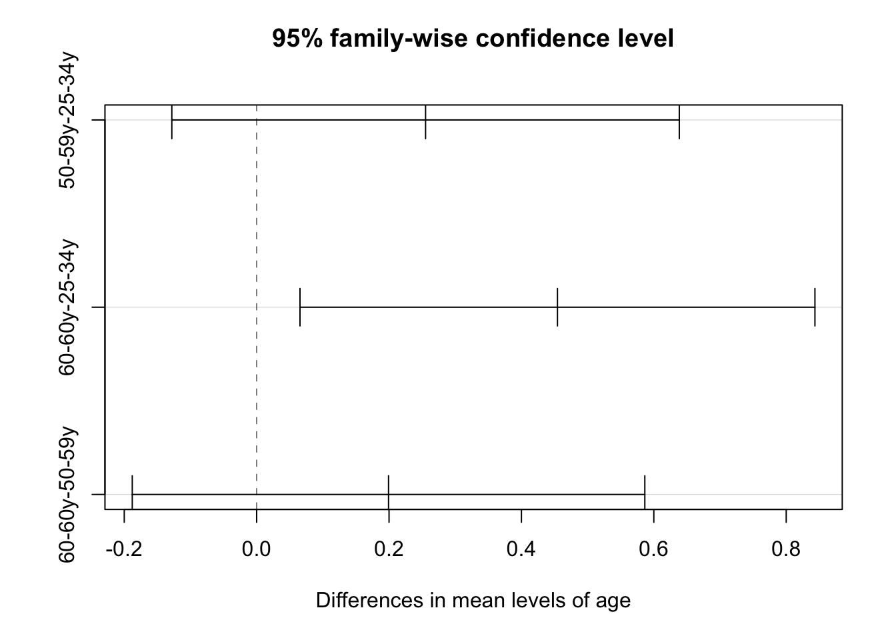
Associative Analysis
Volume Plot
library(gplots) # For balloonplot
Attaching package: 'gplots'The following object is masked from 'package:stats':
lowesslibrary(lsr) # For Cramers'V
# 1. Contingency table for RankA and age
ConTtable<-table(data.df$rankA,data.df$age)
RConTtable<-prop.table(ConTtable)*100
# 2. Graphical visualization of the table.
balloonplot(t(RConTtable), main ="rankA", xlab ="", ylab="",
label = FALSE, show.margins = FALSE)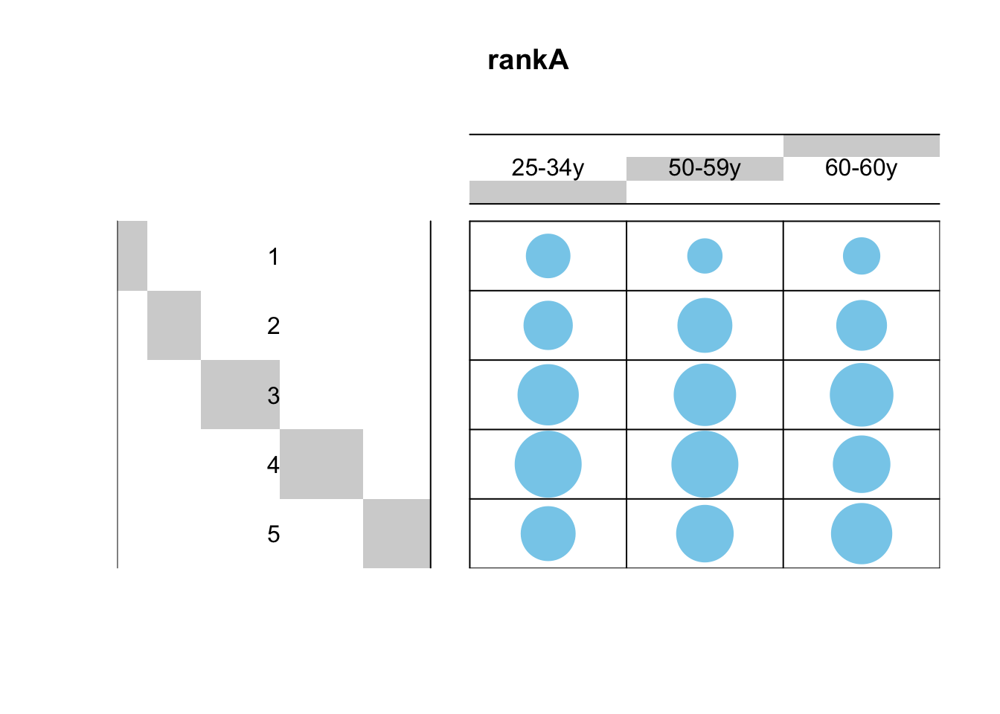
#3. Chi-squared Test
chisq.test(data.df$rankA,y=data.df$age)
Pearson's Chi-squared test
data: data.df$rankA and data.df$age
X-squared = 3.9292, df = 8, p-value = 0.8635cramersV(ConTtable)[1] 0.07960765# 1. Contingency table for RankAA and age
ConTtable<-table(data.df$rankAA,data.df$age)
RConTtable<-prop.table(ConTtable)*100
# 2. Graphical visualization of the table.
balloonplot(t(RConTtable), main ="rankAA", xlab ="", ylab="",
label = FALSE, show.margins = FALSE)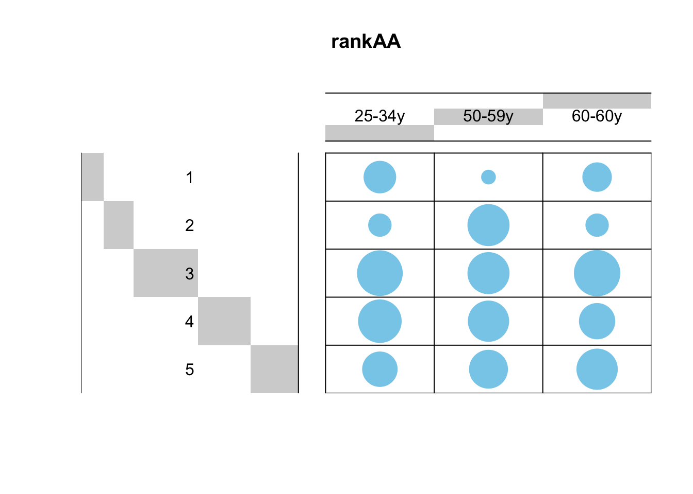
Chi-Squared Test
#3. Chi-squared Test
chisq.test(data.df$rankAA,y=data.df$age)
Pearson's Chi-squared test
data: data.df$rankAA and data.df$age
X-squared = 28.428, df = 8, p-value = 0.0003993cramersV(ConTtable)[1] 0.2141301Another Example
Libraries
library(Hmisc)
Attaching package: 'Hmisc'The following objects are masked from 'package:plyr':
is.discrete, summarizeThe following objects are masked from 'package:dplyr':
src, summarizeThe following objects are masked from 'package:base':
format.pval, unitslibrary(corrplot)corrplot 0.95 loadedlibrary(PerformanceAnalytics)Loading required package: xtsLoading required package: zoo
Attaching package: 'zoo'The following objects are masked from 'package:base':
as.Date, as.Date.numeric
######################### Warning from 'xts' package ##########################
# #
# The dplyr lag() function breaks how base R's lag() function is supposed to #
# work, which breaks lag(my_xts). Calls to lag(my_xts) that you type or #
# source() into this session won't work correctly. #
# #
# Use stats::lag() to make sure you're not using dplyr::lag(), or you can add #
# conflictRules('dplyr', exclude = 'lag') to your .Rprofile to stop #
# dplyr from breaking base R's lag() function. #
# #
# Code in packages is not affected. It's protected by R's namespace mechanism #
# Set `options(xts.warn_dplyr_breaks_lag = FALSE)` to suppress this warning. #
# #
###############################################################################
Attaching package: 'xts'The following objects are masked from 'package:dplyr':
first, last
Attaching package: 'PerformanceAnalytics'The following object is masked from 'package:gplots':
textplotThe following object is masked from 'package:graphics':
legendVolume Plot
data.dfB<-data.frame(dataseniors[1:310,2:13])
#Correlation matrix
res <- round(cor(data.dfB),2)
#correlation matrix with p-values
res2 <- rcorr(as.matrix(data.dfB))
res2 conv brand coup impuls innov prest price primav priqua risk sale
conv 1.00 0.07 -0.01 -0.01 -0.12 0.16 -0.03 0.12 0.17 -0.13 0.12
brand 0.07 1.00 0.05 0.04 -0.05 0.33 -0.06 0.15 0.38 -0.06 0.05
coup -0.01 0.05 1.00 -0.09 -0.02 0.24 0.50 0.37 0.06 -0.10 0.70
impuls -0.01 0.04 -0.09 1.00 0.34 0.11 -0.10 0.05 0.01 0.55 0.06
innov -0.12 -0.05 -0.02 0.34 1.00 0.11 -0.03 0.17 0.01 0.53 -0.02
prest 0.16 0.33 0.24 0.11 0.11 1.00 0.18 0.50 0.42 0.10 0.31
price -0.03 -0.06 0.50 -0.10 -0.03 0.18 1.00 0.33 -0.01 -0.01 0.51
primav 0.12 0.15 0.37 0.05 0.17 0.50 0.33 1.00 0.26 0.08 0.43
priqua 0.17 0.38 0.06 0.01 0.01 0.42 -0.01 0.26 1.00 -0.05 0.17
risk -0.13 -0.06 -0.10 0.55 0.53 0.10 -0.01 0.08 -0.05 1.00 0.03
sale 0.12 0.05 0.70 0.06 -0.02 0.31 0.51 0.43 0.17 0.03 1.00
value 0.02 0.03 0.60 -0.15 -0.11 0.18 0.56 0.33 0.08 -0.19 0.58
value
conv 0.02
brand 0.03
coup 0.60
impuls -0.15
innov -0.11
prest 0.18
price 0.56
primav 0.33
priqua 0.08
risk -0.19
sale 0.58
value 1.00
n= 310
P
conv brand coup impuls innov prest price primav priqua risk
conv 0.1916 0.8487 0.8561 0.0317 0.0043 0.6399 0.0415 0.0028 0.0202
brand 0.1916 0.3621 0.4671 0.3807 0.0000 0.2622 0.0086 0.0000 0.2635
coup 0.8487 0.3621 0.1084 0.7488 0.0000 0.0000 0.0000 0.3259 0.0887
impuls 0.8561 0.4671 0.1084 0.0000 0.0460 0.0909 0.4032 0.8254 0.0000
innov 0.0317 0.3807 0.7488 0.0000 0.0483 0.5853 0.0023 0.8683 0.0000
prest 0.0043 0.0000 0.0000 0.0460 0.0483 0.0017 0.0000 0.0000 0.0835
price 0.6399 0.2622 0.0000 0.0909 0.5853 0.0017 0.0000 0.7963 0.9220
primav 0.0415 0.0086 0.0000 0.4032 0.0023 0.0000 0.0000 0.0000 0.1465
priqua 0.0028 0.0000 0.3259 0.8254 0.8683 0.0000 0.7963 0.0000 0.3911
risk 0.0202 0.2635 0.0887 0.0000 0.0000 0.0835 0.9220 0.1465 0.3911
sale 0.0357 0.4210 0.0000 0.3078 0.7433 0.0000 0.0000 0.0000 0.0021 0.6027
value 0.6754 0.5501 0.0000 0.0099 0.0512 0.0013 0.0000 0.0000 0.1748 0.0008
sale value
conv 0.0357 0.6754
brand 0.4210 0.5501
coup 0.0000 0.0000
impuls 0.3078 0.0099
innov 0.7433 0.0512
prest 0.0000 0.0013
price 0.0000 0.0000
primav 0.0000 0.0000
priqua 0.0021 0.1748
risk 0.6027 0.0008
sale 0.0000
value 0.0000 #Visualization of the data matrix
corrplot(res, type = "upper", order = "hclust",
tl.col = "black", tl.srt = 45)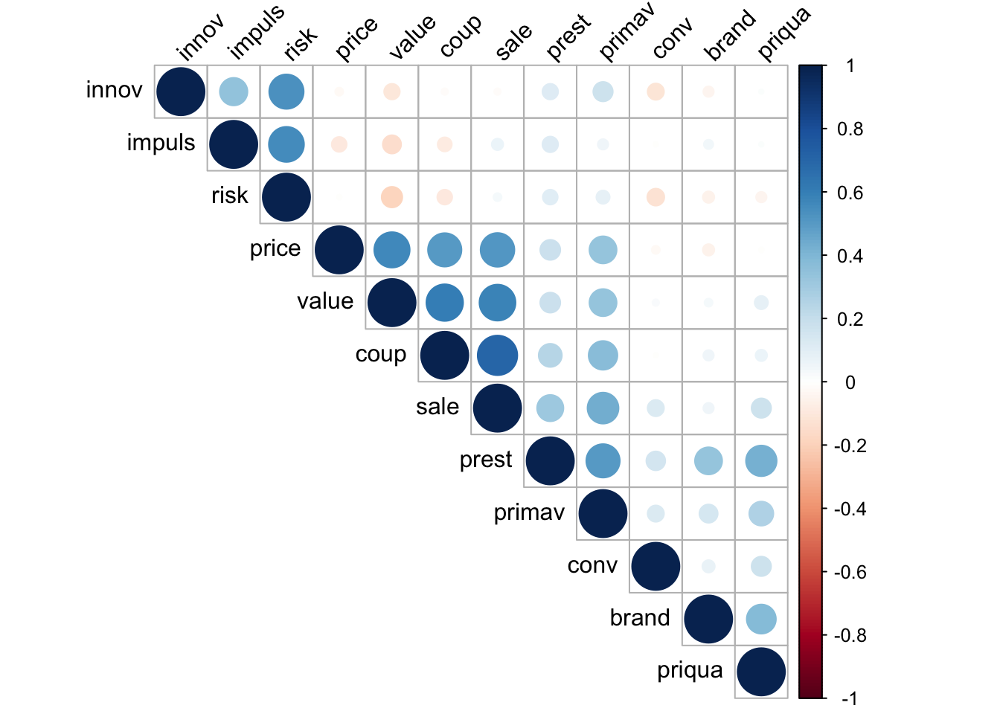
Matrix of Scatter Plots
#Matrix of scatter plots.
my_data <- data.dfB[ c('price','coup','sale','value','primav')]
chart.Correlation(my_data, histogram=TRUE,pch="+")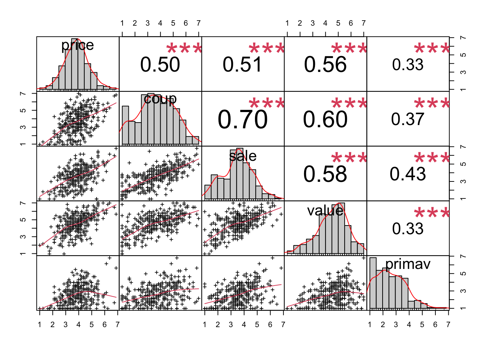